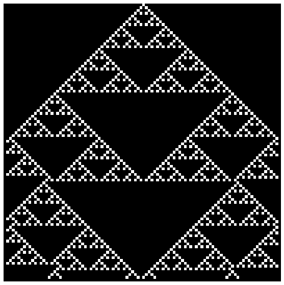

Automata¶
Method 1 Spreadsheet¶
Method 2 Lookup Table¶
import numpy as np
import matplotlib.pyplot as plt
C = np.zeros((100,100)).astype(int)
def plot(x):
fig, ax = plt.subplots()
im = ax.imshow(x, cmap = 'gray')
ax.axis('off')
fig.set_size_inches(10, 10)
plt.show()
plot(C)

C[0,50] = 1
plot(C)

bin(90)
'0b1011010'
rule = np.zeros((2,2,2))
rule[0,0,0] = 0
rule[0,0,1] = 1
rule[0,1,0] = 0
rule[0,1,1] = 1
rule[1,0,0] = 1
rule[1,0,1] = 0
rule[1,1,0] = 1
rule[1,1,1] = 0
def CA(X):
for i in range(1,X.shape[0]-1): #row
for j in range(1,X.shape[1]-1): #col
N = X[i-1,j]
NW = X[i-1,j-1]
NE = X[i-1,j+1]
X[i,j] = rule[NW,N,NE]
return X
plot(CA(C))

Method 3 Direct Formula¶
def CA(X):
for i in range(1,X.shape[0]-1): #row
for j in range(1,X.shape[1]-1): #col
X[i,j] = (rule/(2**(4*X[i-1,j-1] + 2*X[i-1,j] + X[i-1,j+1]))) % 2
return X
rule = 90
plot(CA(C))
